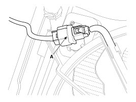
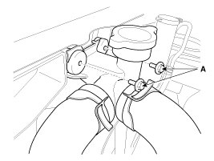
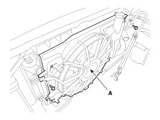
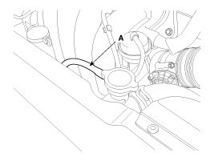
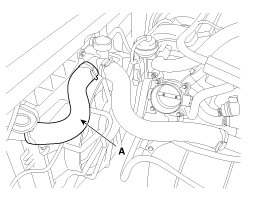
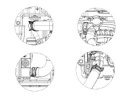
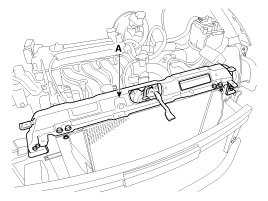
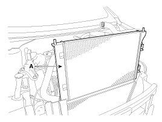

Repair Procedures
Removal and Installation
1. Disconnect the battery terminals.
2. Remove the air cleaner assembly.
3. Remove the battery and battery tray.
4. Disconnect the fan motor connector (A)

5. Loosen the filler neck assembly mounting bolts (A).

6. Remove the cooling fan assembly (A).
Tightening torque:
4.9 - 7.8 N.m (0.5 - 0.8 kgf.m, 3.6 - 5.8 lb-ft)

7. Remove the under cover.
8. Loosen the drain plug, and drain the engine coolant. Remove the radiator cap to help drain the coolant faster.
9. Disconnect the over flow hose (A) from the filler neck.

10. Disconnect the radiator upper hose (A).

11. Disconnect the radiator lower hose (A).

NOTE:
When installing radiator hoses, install as shown in illustrations.

12. Disconnect the ATF cooler hoses (A/T only).
13. Remove the head lamp.
14. Remove the front bumper.
15. Remove the radiator upper bracket (A).

16. Separate the condenser from the radiator and then remove the radiator assembly (A).

17. Installation is the reverse order of removal.
18. Fill the radiator with coolant and check for leaks.
NOTE:
- Bleed air from the cooling system.
- Start engine and let it run until it warms up (until the radiator fan operates 3 or 4 times).
- Turn off engine. Check the coolant level and add coolant if needed. This will allow trapped air to be removed from the cooling system.
- Put the radiator cap on tightly, then run engine again and check for leaks.